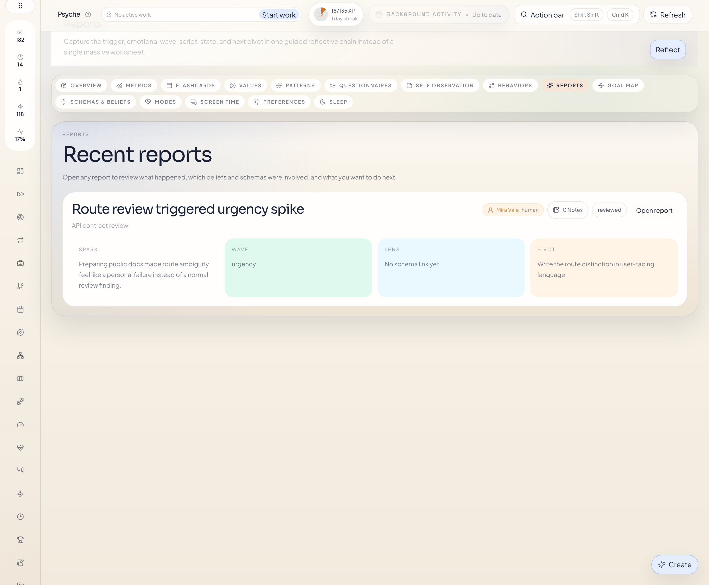
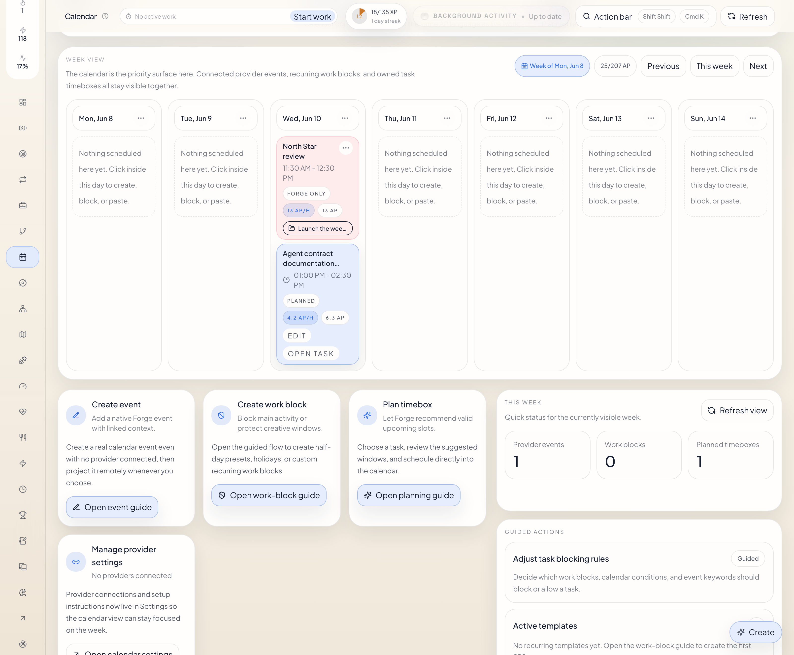

OpenClaw
Published plugin with managed Forge runtime commands, onboarding checks, structured entity tools, calendar actions, and direct UI handoff into Forge.
Forge For Agents
Forge gives the user and their agent one structured memory layer for goals, projects, tasks, strategies, live work sessions, linked notes, XP, weekly review, and calendar planning. The agent integrations let OpenClaw or Hermes read that data, update it safely, and open the right Forge page when planning or review is easier in the UI.
Forge is explicitly multi-user. Every important record can belong
to a typed human or bot user, and
cross-user links are allowed, so a human-owned project can still
depend on bot-owned tasks or strategy branches without losing
ownership clarity.
The Psyche module is explicitly influenced by third-wave CBT, ACT, and schema therapy. That gives the agent a durable place to save values, beliefs, modes, patterns, and trigger reports instead of leaving psychologically important material buried in chat.

Plugin Surfaces
OpenClaw is the published install path today. Hermes is packaged as a native Python plugin for Hermes with entry-point discovery. Both adapters let the agent work with the same Forge records, timer controls, calendar planning tools, and UI handoff points. Standalone mode runs Forge directly when you want the app and API without an agent layer.
Published plugin with managed Forge runtime commands, onboarding checks, structured entity tools, calendar actions, and direct UI handoff into Forge.
Native Hermes plugin layout with Python package entry-point discovery, bundled skill install, and local runtime bootstrap through the same tested Forge startup helper and data-root safeguards.
Run Forge directly from the repo when you want the full app, the API, and the calendar workspace without an agent host on top.
Real Agent Interactions
The screenshots below show two different kinds of work: task execution on the Forge side, and value-based Psyche tracking on the mental-health and reflection side.


What Forge Is
Forge keeps goals, projects, tasks, work sessions, notes, calendar commitments, and psychologically relevant records in one place that stays inspectable and editable over time.
Your agent can turn vague intentions into a clear structure: a goal, the projects under it, and the tasks that need to happen next.
Forge is not just storage. It has a real board with columns like backlog, focus, in progress, blocked, and done, so the work can actually move.
Work sessions are real timed runs. Your agent can start them, focus them, complete them, and Forge keeps the XP and review trail attached to what really happened. If minutes need to be corrected later, Forge also supports signed work adjustments on existing tasks and projects instead of faking a live session.
Forge makes ownership explicit. A record can belong to a human or a bot, and the UI, search surfaces, and agent tools can all show or scope that ownership directly.
When work needs sequence and branching, Forge gives it a real strategy graph instead of forcing everything into flat project prose or disconnected task lists.
Notes, insights, values, beliefs, patterns, and trigger reports all stay linked to the work instead of getting lost in separate documents and chats.
Multi-user Forge
Forge does not treat all records as if they belong to one hidden operator. Ownership is explicit, but collaboration still works across owners. That makes the system easier to inspect, easier to trust, and easier to automate.
Goals, projects, tasks, strategies, notes, habits, calendar
records, and Psyche records can all carry a
userId. Every Forge user is typed as
human or bot.
Read routes can focus on one owner, several owners, or all
visible users with userId and repeated
userIds. That keeps comparison and handoff views
explicit instead of accidental.
A human-owned project can point at bot-owned tasks. A bot-owned strategy can target a human-owned goal. Forge keeps ownership and linkage separate on purpose.
The current model is permissive when a route explicitly asks for another user. That keeps the product collaborative today while leaving room for stricter future policy controls.
If OpenClaw, Hermes, and the browser are meant to see the same Forge system, point them at the same Forge server.
For local shared installs, give the adapters the same
dataRoot so they use the same database instead of
drifting into separate sandboxes.
Use Settings -> Users to create the human and
bot users that should own records in the shared runtime.
Agent writes should set userId deliberately, and
agent reads should use userIds when a scoped view
matters.
Strategies
Use a strategy when the work has sequence, branching, or a clear end state that is bigger than one task list. Forge models that as a directed acyclic graph of projects and tasks, not as a vague note.
Title, overview, end-state description, target goals, target projects, linked entities, and a directed non-looping graph of project and task nodes.
The graph can branch and converge, but it should not loop. That lets Forge show what is complete, what is blocked, and what is truly next.
Project nodes use project progress directly. Task nodes map status to progress: done is 100%, in progress is 66%, focus is 50%, blocked or paused is 25%, and untouched work is 0%.
Forge computes alignmentScore as
round((average node progress * 0.7 + average target progress
* 0.3) * 100). That keeps most weight on the actual plan sequence while
still checking whether the end targets are landing.
Getting Started
The install block below switches between the published OpenClaw path, the Hermes Python plugin package, and the plain standalone repo runtime. OpenClaw still needs the allow-list repair step. Hermes installs through pip into Hermes' own runtime environment while keeping the same tested Forge runtime bootstrap. If you want a shared multi-user Forge, keep the adapters on the same runtime and the same storage root.
Published plugin with a managed local runtime and CLI health checks.
OpenClaw is the fastest path if you want the published package and the Forge runtime commands to appear directly inside the OpenClaw CLI.
Use OpenClaw if you want the published plugin path, Hermes if you want the native Hermes plugin layout, and Standalone if you just want Forge itself.
OpenClaw installs the published package. Hermes installs a Python package into Hermes' runtime environment. Standalone only needs the normal repo dependencies.
OpenClaw and Hermes can bootstrap the local Forge runtime on
127.0.0.1:4317. Standalone runs the repo app
directly through npm run dev.
OpenClaw installs also need the agent tool cards allowed under
forge-openclaw-plugin. Hermes loads the plugin
through the normal Hermes plugin registry and installs the Forge
skill automatically on first load.
The normal local UI address is
http://127.0.0.1:4317/forge/. The repo dev server
also exposes http://127.0.0.1:3027/forge/.
If 4317 is already taken, the managed local runtime
can move to the next free local port and remember that choice.
OpenClaw installs normally use
~/.openclaw/extensions/forge-openclaw-plugin/data/forge.sqlite. Hermes defaults to
~/.hermes/forge/data/forge.sqlite.
If you want a specific storage folder, set
dataRoot in OpenClaw, edit
~/.hermes/forge/config.json for Hermes, or use
FORGE_DATA_ROOT in standalone shells.
OpenClaw runtime logs live under
~/.openclaw/logs/forge-openclaw-plugin/<host>-<port>.log.
Hermes reuses the same Forge local-runtime helper, so local startup issues usually come from a missing Python package install, repo runtime dependencies, or a port collision rather than from a second plugin-specific server.
What It Looks Like

Calendar Surface
Forge does not treat scheduling as an afterthought anymore. The week view keeps provider events, native Forge events, recurring work blocks, and task timeboxes visible together so the user and the agent can plan against the same calendar reality.

The calendar opens directly on a responsive week view so the user can see commitments, work blocks, timeboxes, and gaps before deciding what to do next.
Forge work blocks are compact recurring templates, not fake exploded events. They support start and end dates, holiday blocks, edit/delete actions, and indefinite repetition when no end date is set.
Google Calendar, Apple Calendar, Exchange Online, and custom CalDAV connections can live beside Forge-owned events and timeboxes. Calendar colors can stay on for source clarity or turn off while keeping clean neutral event cards.
More Product Surfaces
These two screens show that more directly: one on the execution side with a real project board and linked notes, and one on the Psyche side with behavior mapping tied to values and recovery.


What The Agent Can Save
The names stay literal. A goal is a goal. A project is a project. A task is a task. That keeps the product easy to understand and makes the agent’s actions easy to check afterward.
Long-term directions you care about, such as health, family, money, or creative work.
Concrete bodies of work that move one goal forward.
Explicit human and bot owners that make shared work readable instead of hiding everything under one generic operator.
Directed non-looping plans that sequence projects and tasks toward one or more target goals or projects.
Specific actions inside projects that can be scheduled, moved, started, and completed.
Real work sessions with real time, focus state, and completion history.
Markdown notes that can attach to one or many records as evidence, handoff, or context.
Saved observations or recommendations from you or a trusted agent.
Important directions or principles you want your actions to reflect.
Explicit belief sentences that shape behavior, for better or worse.
Repeating loops with triggers, actions, short-term payoff, and long-term cost.
Structured records of emotionally important episodes, including what happened and what followed.
Why Psyche Matters
The Psyche side of Forge is explicitly influenced by third-wave CBT, ACT, and schema therapy. In plain language, that means it helps you and your agent save values, beliefs, modes, patterns, and trigger reports in a way that is structured enough to stay useful over time.
Chat is useful for ongoing conversation. Forge keeps values, beliefs, patterns, and trigger reports in structured records that stay visible and linked to work over time.
Psyche records are not meant to float separately from the rest of the product. They can stay linked to goals, projects, tasks, notes, and reports so reflection stays connected to what is happening in your life and work.
Forge can store the structured material that shows up in CBT, ACT, and schema work: values, thoughts, beliefs, coping modes, patterns, and trigger episodes.
Real Examples
These are normal, concrete things you can ask for. The value is that the agent does not just answer you in chat. It can save the result in a workspace that you can open and keep using.
You tell the agent:
I want to get in shape and stop improvising my health.
It can create a goal like
Build a stable, healthy body, add a project like
Spring training block, and create the first tasks
under it.
When you open Forge later, the goal, project, and tasks are already connected.
Forge tasks live on a real board with columns like backlog,
focus, in progress, blocked, and done. Your agent can help you
inspect that state and update tasks like
Write plugin install guide so the board reflects
the actual work.
The board stays visible as a direct execution surface.
You tell the agent to start work on
Refactor Forge install docs. Forge starts a real
task run, records the session, and keeps it visible as your
current work until you release or complete it.
This is not just changing a task status. It is recording an actual work session.
Forge tracks the work sessions and completions, then shows the XP and review trail. The agent can point to actual work that happened.
If work already happened away from the live timer, Forge can add or remove tracked minutes on an existing task or project. The correction is explicit, clamped so tracked time cannot go negative, and the XP shift stays explainable.
That is a different path from starting a live task run or logging a finished work item after the fact.
After finishing Write plugin install guide, your
agent can save a note with what changed, what still feels risky,
and which commands were tested. That note stays linked to the
task, project, or goal instead of disappearing in chat history.
You notice a repeating loop: when release steps feel messy, you delay them, then feel shame, then avoid the task even more. Forge lets your agent save that as a pattern, link it to a belief, and attach a trigger report when a real episode happens.
The pattern stays linked to the work it affects.
Commands
The command set below follows the selected install mode so you do not have to translate OpenClaw instructions into Hermes or standalone repo commands.
openclaw forge health
openclaw forge statusopenclaw forge start
openclaw forge stop
openclaw forge restart
openclaw forge statusopenclaw config get plugins.allow --jsontail -n 120 ~/.openclaw/logs/forge-openclaw-plugin/<host>-<port>.logFAQ
The setup details below switch with the selected install mode, but the underlying Forge product behavior stays the same.
The most common cause is that the plugin was installed and
enabled, but not added to plugins.allow. Run the
full install flow above, especially the allow-list repair
command, then restart the gateway.
Check OpenClaw -> Agents first. The Forge
plugin can be installed, enabled, and healthy while the agent
still has the forge-openclaw-plugin tools turned
off on the agent tool page. Turn on all Forge tool cards for the
agent you are actually using, then try again.
Use live task runs when the work is happening now. Use
log work when the work already happened and should
be recorded as a finished work item. Use
adjust work
when the task or project already exists and only the tracked
minutes need to move up or down.
If something else already uses 4317, Forge can move
to the next free local port. Use
openclaw forge status to see the actual base URL it
chose.
Yes. Set dataRoot in the OpenClaw plugin config or
edit ~/.hermes/forge/config.json for Hermes, then
restart the runtime so Forge picks up the new storage root.
Read the runtime log at
~/.openclaw/logs/forge-openclaw-plugin/<host>-<port>.log. It captures the child process output from the actual Forge
server.
Source
OpenClaw is published on npm. Hermes is published on PyPI. The standalone app and both plugin codebases live in the same repo.